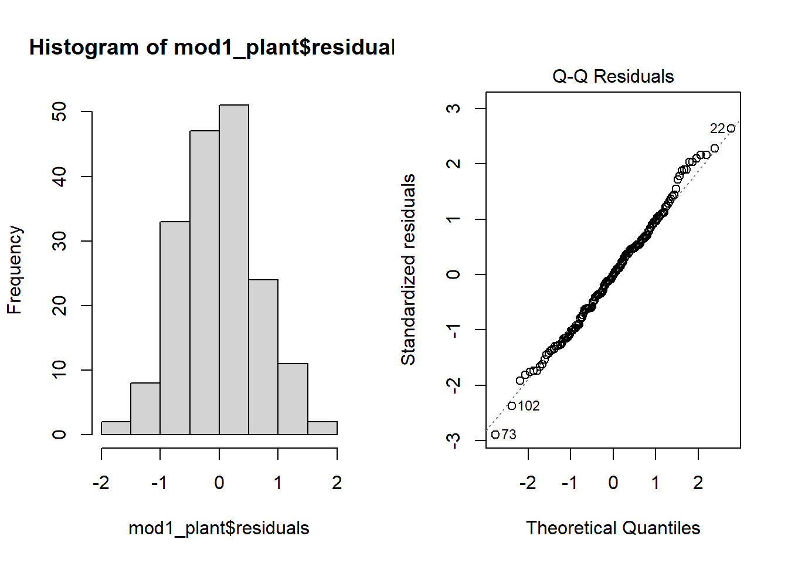
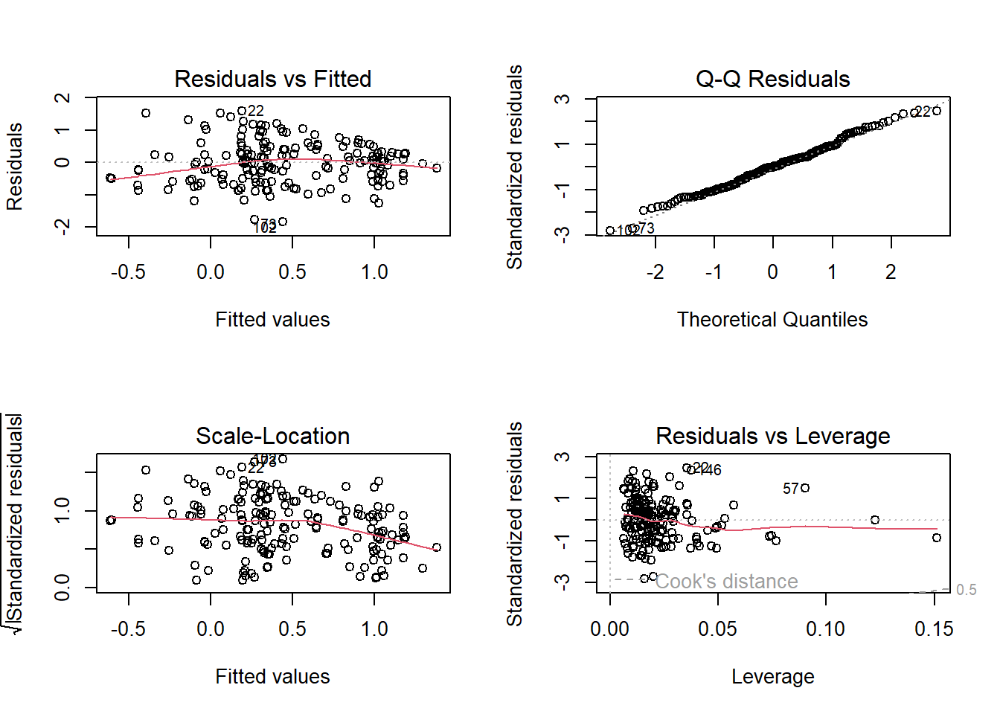
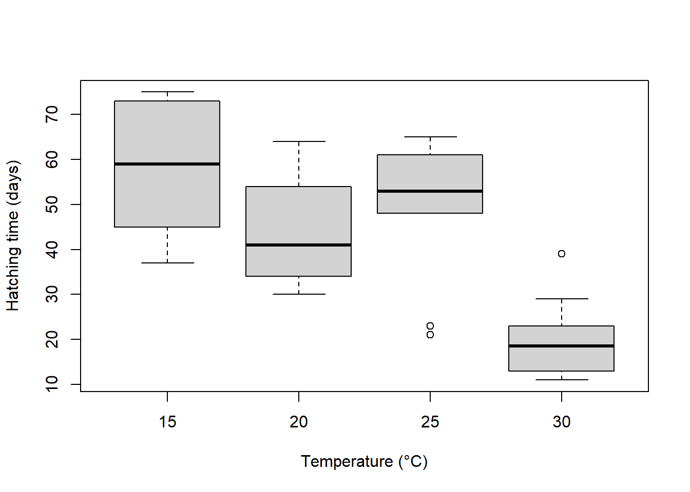
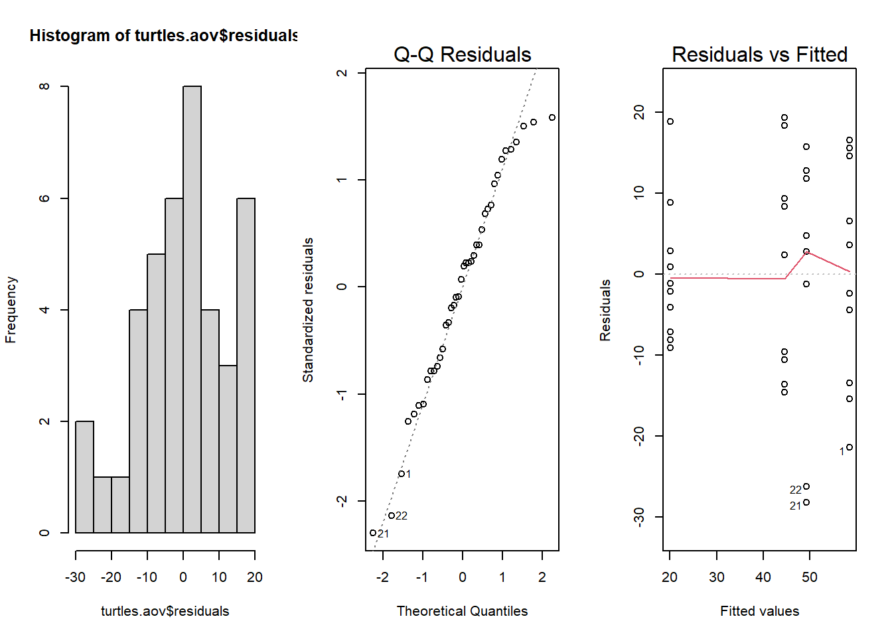

Linear temp
Linear regression
One predictor
Regression is somehow different from correlation because it try to
put variables into equation and thus explain relationship between them.
In Model I regression (indeed we have Model II when two
variables in the regression equation are random , i.e. no controlled by
the researcher), it is used to predict a quantitative outcome of a
dependent variable \(y\) on the basis
of one single independent predictor variable \(x\). The goal is to build a mathematical
model (or formula) that defines \(y\)
as a function of the \(x\) variable,
and that’s why why linear regression are also called linear modelling
(previously added to our scatter plot using abline or
geom_smooth.
Note that the linear in linear model does not imply a
straight-line relationship but rather that the response is a linear
(additive) combination of the effects of the explanatory variables.
However, because we tend to start by fitting the simplest relationship,
many linear models are represented by straight lines.
Once, we built a statistically significant model, it’s possible to use it for predicting future outcome on the basis of new \(x\) values.
Formula and basics
The formula of linear regression can be written as follows: \[ y = \beta_0 + \beta_1*x + \epsilon \]
where:
\(\beta_0\) and \(\beta_1\) are known as the regression beta coefficients or parameters:
- \(\beta_0\) is the intercept of the regression line; that is the predicted value when x = 0.
- \(\beta1\) is the slope of the regression line.
\(\epsilon\) is the error term (also known as the residual errors).The error term is drawn from a statistical distribution that captures the random variability in the response. In standard linear regression this is assumed to be a normal (Gaussian) distribution.
The figure below illustrates the linear regression model, where:
- the best-fit regression line is in blue
- the intercept (\(\beta_0\)) and the slope (\(\beta_1\)) are shown in green
- the error terms (\(\epsilon\)) are represented by vertical red lines

From the figure above, it can be seen that not all the data points fall exactly on the fitted regression line. Some of the points are above the blue curve and some are below it; overall, the residual errors (\(\epsilon\)) have approximately mean zero.
TERMINOLOGY ALERT
The sum of the squares of the residual errors are called the Residual Sum of Squares or RSS.
The average variation of points around the fitted regression line is called the Residual Standard Error (RSE). This is one the metrics used to evaluate the overall quality of the fitted regression model. The lower the RSE, the better it is.
Since the mean error term is zero, the outcome variable y can be approximately estimated as follow:
\[y= \beta_0+\beta_1*x\]
Mathematically, the beta coefficients (\(\beta_0\) and \(\beta_1\)) are determined so that the RSS is as minimal as possible. This method of determining the beta coefficients is technically called least squares regression or ordinary least squares (OLS) regression.
Once, the beta coefficients are calculated, a t-test is performed to check whether or not these coefficients are significantly different from zero. A non-zero beta coefficients means that there is a significant relationship between the predictors (\(x\)) and the outcome variable (\(y\)).
Running the analysis
So, the goal in linear regression is obtain the best estimates for
the model coefficients (\(\alpha\) and
\(\beta\)). In R you can fit linear
models using the function lm.
In this example, we will use a data set on plant heights around the
world Plant_height.csv.
The main argument to lm is the model formula
y ~ x, where the response variable is on the left of the
tilde symbol (~) and the explanatory variable is on the
right. lm also has an optional data argument that lets you
specify a data frame from which the variables will be taken.
To test whether plant height is associated with temperature , we would model height as the dependent variable (in this case we are using the log of plant height) and temperature as the predictor variable \(loght = \beta_0 + \beta_1 * temp\).
We can extracted the beta coefficients of this linear model using:
## (Intercept) temp
## -0.22566451 0.04241362The estimates for the coefficients give you the slope(\(\beta_0\)) and intercept (\(\beta_1\)) for the temp
variable. In this example, the regression equation for (log) plant
height as a function of temperature is:
\(log(plantheight) = -0.22566 + 0.04241 * temp + \epsilon\)
the intercept (\(\beta_0\)) is \(-0.22566\). It can be interpreted as the predicted (log) plant heigth when temperature is equal to zero. Regression through the origin is when you force the intercept of a regression model to equal zero. It’s also known as fitting a model without an intercept (e.g., the intercept-free linear model \(y = \beta_1*x\) is equivalent to the model \(y = \beta_0 + \beta_1*x\) with \(\beta_0=0\)). Knowing that the true relationship between your predictors and the expected value of your dependent variable has to pass through the origin would be a good reason for forcing the estimated relationship through the origin if you knew for certain what the true relationship was (be careful very rare cases where it is justified to remove the intercept).
the regression beta coefficient for the variable
temp(\(\beta1\)), also known as the slope, is \(0.04241\). This means that, for one unit of \(temp\), we can expect an increase of \(0.04241\) units in \(log(plantheight)\).
Calling summary on a model object produces a lot of
useful information but one of the main things to look out for are the
t-statistics and p-values for each coefficient. These test the null
hypothesis that the true value for the coefficient is 0.
##
## Call:
## lm(formula = loght ~ temp, data = Plant_height)
##
## Residuals:
## Min 1Q Median 3Q Max
## -1.97903 -0.42804 -0.00918 0.43200 1.79893
##
## Coefficients:
## Estimate Std. Error t value Pr(>|t|)
## (Intercept) -0.225665 0.103776 -2.175 0.031 *
## temp 0.042414 0.005593 7.583 1.87e-12 ***
## ---
## Signif. codes: 0 '***' 0.001 '**' 0.01 '*' 0.05 '.' 0.1 ' ' 1
##
## Residual standard error: 0.6848 on 176 degrees of freedom
## Multiple R-squared: 0.2463, Adjusted R-squared: 0.242
## F-statistic: 57.5 on 1 and 176 DF, p-value: 1.868e-12Looking at only the p-values, this simple model seems to fit the data
very well. For the intercept we usually don’t care if it is zero or not,
but for the other coefficient (the slope), a value significantly
differing from zero indicates that there is an association between that
explanatory variable and the response. In this example, an increase in
temperature is associated with an increase in plant height. But
lm output tells us much more. The summary outputs shows 6
components, including
Call shows the function call used to compute the regression model.
Residuals provide a quick view of the distribution of the residuals, which by definition have a mean zero. Therefore, the median should not be far from zero, and the minimum and maximum should be roughly equal in absolute value.
Coefficients shows the regression beta coefficients and their statistical significance. Predictor variables, that are significantly associated to the outcome variable, are marked by stars.
Residual standard error (RSE), R-squared (R2) and the F-statistic are metrics that are used to check how well the model fits to our data.
Coefficients significance
The coefficients table, in the model statistical summary, shows:
the estimates of the beta coefficients
the standard errors (SE), which defines the accuracy of beta coefficients. For a given beta coefficient, the SE reflects how the coefficient varies under repeated sampling. It can be used to compute the confidence intervals and the t-statistic.
the t-statistic and the associated p-value, which defines the statistical significance of the beta coefficients.
1 - t-statistic and p-values
For a given predictor, the t-statistic (and its associated p-value) tests whether or not there is a statistically significant relationship between a given predictor and the outcome variable, that is whether or not the beta coefficient of the predictor is significantly different from zero.
The statistical hypotheses are as follow:
- Null hypothesis (H0): the coefficients are equal to zero (i.e., no relationship between x and y)
- Alternative Hypothesis (H1): the coefficients are not equal to zero (i.e., there is some relationship between \(x\) and \(y\))
Mathematically, for a given beta coefficient (\(\beta\)), the t-test is computed as \(t = (\beta - 0)/SE(\beta)\), where \(SE(\beta)\) is the SE of the coefficient \(\beta\). Simply said, the t-statistic measures the number of standard deviations that \(\beta\) is away from 0. Thus a large t-statistic will produce a small p-value (=different).
The higher the t-statistic (and the lower the p-value), the more significant the predictor. The symbols to the right (***) visually specifies the level of significance. The line below the table shows the definition of these symbols; one star means 0.01 < p < 0.05. The more the stars beside the variable’s p-value, the more significant the variable.
A statistically significant coefficient indicates that there is an association between the predictor (\(x\)) and the outcome (\(y\)) variable.
The t-statistic is a very useful guide for whether or not to include a predictor in a model. High t-statistics (which go with low p-values near 0) indicate that a predictor should be retained in a model, while very low t-statistics indicate a predictor could be dropped (Bruce and Bruce 2017).
2 - Standard errors and confidence intervals
The standard error measures the variability/accuracy of the beta coefficients. It can be used to compute the confidence intervals of the coefficients.
For example, the 95% confidence interval for the coefficient \(\beta1\) is defined as \(\beta1 +/- 2*SE(\beta1)\), where:
the lower limits of \(\beta_1 = \beta_1 - 2*SE(\beta_1) = 0.042414 - 2*(0.005593) = 0.031228\)
the upper limits of \(\beta1 = \beta1 + 2*SE(\beta1) = 0.042414 + 2*(0.005593) = 0.053600\)
That is, there is approximately a 95% chance that the interval [0.031, 0.053] will contain the true value of \(\beta1\). Similarly the 95% confidence interval for \(\beta0\) can be computed as \(\beta1 +/- 2*SE(\beta0)\).
To get this information, either you calculate by hands or you simply call:
## 2.5 % 97.5 %
## (Intercept) -0.43047074 -0.02085828
## temp 0.03137508 0.05345215Model accuracy
Once you identified that, at least, one predictor variable is significantly associated the outcome, you should continue the diagnostic by checking how well the model fits the data. This process is also referred to as the goodness-of-fit
The overall quality of the linear regression fit can be assessed using the following three parameters, displayed in the model summary:
- The Residual Standard Error (RSE)
The RSE (also known as the model sigma) is the residual variation, representing the average variation of the observations points around the fitted regression line. This is the standard deviation of residual errors.
RSE provides an absolute measure of patterns in the data that can’t be explained by the model. When comparing two models, the model with the small RSE is a good indication that this model fits the best the data.
Dividing the RSE by the average value of the outcome variable will give you the prediction error rate, which should be as small as possible.
In our example, RSE = 0.6848, meaning that the observed
Petal.width values deviate from the true regression line by
approximately 0.6848 units in average.
Whether or not an RSE of 0.6848 units is an acceptable
prediction error is subjective and depends on the problem context.
However, we can calculate the percentage error. In our data set, the
mean value of loght is 0.458267, and so the percentage
error is 0.6848/0.458267 * 100 = 149 %. There is indeed a high
variation.
## [1] 149.4371- The R-squared (\(R^2\))
The R-squared \(R^2\) ranges from 0 to 1 and represents the proportion of information (i.e. variance) in the response that is explained by the explanatory variable(s). The adjusted \(R^2\) adjusts \(R^2\) with the degrees of freedom.
The \(R^2\) measures, how well the model fits the data. For a simple linear regression, \(R^2\) is the square of the Pearson correlation coefficient.
A high value of \(R^2\) is a good indication. However, as the value of \(R^2\) tends to increase when more predictors are added in the model, such as in multiple linear regression model, you should mainly consider the adjusted \(R^2\)**, which is a penalized \(R^2\) for a higher number of predictors.
An (adjusted) \(R^2\) that is close to 1 indicates that a large proportion of the variability in the outcome has been explained by the regression model.
A number near 0 indicates that the regression model did not explain much of the variability in the outcome.
- F-statistic
The F-statistic gives the overall significance of the model. It assess whether at least one predictor variable has a non-zero coefficient.
In a simple linear regression, this test is not really interesting since it just duplicates the information in given by the t-test, available in the coefficient table. In fact, the F-test is identical to the square of the t-test: \(57.5 = (7.583)^2\). That would be true in any model with 1 degree of freedom.
The F-statistic becomes more important once we start using multiple predictors as in multiple linear regression.
A large F-statistic will corresponds to a statistically significant p-value (p < 0.05). In our example, the F-statistic equal 57.5 producing a p-value of < 1.868e-12, which is highly significant.
Model assumption
Linearity There is no point trying to fit a staight line to data that are curved! Curvilinear relationships produce U-shaped patterns in plots of the residuals vs the fitted values. Using the plot function on a model object provides a series of four graphical model diagnostics, the first of which is a plot of residuals versus fitted values.

The absence of strong pattern in the above plot indicates the assumption of linearity is valid. If there is strong pattern, one potential solution is to log-transform the response. Note in the above example plant height had already been log-transformed.
Click here to see a nice interactive app that shows you what patterns of residuals you would expect with curved relationships
Constant variance An even spread of data around the regression line is desirable. If the plot of residuals versus fitted values is fan-shaped the assumption of constant variance (aka homogeneity of variance) is violated. A log-transformation of the response variable may fix this problem, but if it doesn’t the best solution is to use a different error distribution in a generalised linear model framework (GLM).
Normality Checks of whether the data are normally
distributed are usually performed by either plotting a histogram of the
residuals or via a quantile plot where the residuals are plotted against
the values expected from a normal distribution (the second of the
figures obtained by plot(mod_plant). If the points in the
quantile plot lie mostly on the line, the residuals are normally
distributed. Violations of normality can be fixed via transformations or
by using a different error-distribution in a GLM. Note, however, that
linear regression is reasonably robust against violations of
normality.
par(mfrow = c(1, 2)) # This code put two plots in the same window
hist(mod1_plant$residuals) # Histogram of residuals
plot(mod1_plant, which = 2) # Quantile plot
Independence The observations of the response should be independent of each other. Non-independent observations are those that are in some way associated with each other beyond that which is explained by the predictor variable(s). For instance, samples collected from the same site, or repeatedly from the same object, may be more alike due to some additional factor other than the measured explanatory variable. Ensuring independence is an issue of experimental and sampling design and we usually know if the data are independent or not in advance of our analysis.
There are a variety of measures for dealing with non-independence. These include ensuring all important predictors are in the model; averaging across nested observations; or using a mixed-model.
Based on Pena and Slate (2006), the four assumptions in linear
regression are normality, heteroscedasticity, and linearity, and what
the authors refer to as uncorrelatedness. The gvlma( )
function in the gvlma package, performs a global validation
of linear model assumptions as well separate evaluations of skewness,
kurtosis, and heteroscedasticity.
##
## Call:
## lm(formula = loght ~ temp, data = Plant_height)
##
## Residuals:
## Min 1Q Median 3Q Max
## -1.97903 -0.42804 -0.00918 0.43200 1.79893
##
## Coefficients:
## Estimate Std. Error t value Pr(>|t|)
## (Intercept) -0.225665 0.103776 -2.175 0.031 *
## temp 0.042414 0.005593 7.583 1.87e-12 ***
## ---
## Signif. codes: 0 '***' 0.001 '**' 0.01 '*' 0.05 '.' 0.1 ' ' 1
##
## Residual standard error: 0.6848 on 176 degrees of freedom
## Multiple R-squared: 0.2463, Adjusted R-squared: 0.242
## F-statistic: 57.5 on 1 and 176 DF, p-value: 1.868e-12
##
##
## ASSESSMENT OF THE LINEAR MODEL ASSUMPTIONS
## USING THE GLOBAL TEST ON 4 DEGREES-OF-FREEDOM:
## Level of Significance = 0.05
##
## Call:
## gvlma(x = mod1_plant)
##
## Value p-value Decision
## Global Stat 0.47538 0.9759 Assumptions acceptable.
## Skewness 0.29268 0.5885 Assumptions acceptable.
## Kurtosis 0.11168 0.7382 Assumptions acceptable.
## Link Function 0.02790 0.8673 Assumptions acceptable.
## Heteroscedasticity 0.04311 0.8355 Assumptions acceptable.Two (or more) predictors
Multiple linear regression is just an extension of simple linear regression used to predict an outcome variable (\(y\)) on the basis of multiple distinct predictor variables (\(x\)).
With three predictor variables (\(x\)), the prediction of \(y\) is expressed by the following equation:
\[y = \beta_0 + \beta_1*x_1 + \beta_2*x_2 + \beta_3*x_3\] The \(\beta\) values measure the association between the predictor variable and the outcome. “\(\beta_j\)” can be interpreted as the average effect on \(y\) of a one unit increase in \(x_j\), holding all other predictors fixed.
\(loght = \beta_0 + \beta_1 * temp + \beta_2 * alt + \beta_3 * rain\)
or
A common problem that arises in multiple linear regression is the multi-collinearity. This is the situation when two or more predictors are highly linearly related between them. Multicollinearitiy has important effects on the fit of the model:
It reduces the precision of the estimates. As a consequence, signs of fitted coefficients may be reversed and valuable predictors may appear as non significant.
It is difficult to determine how each of the highly related predictors affects the response, since one masks the other. This may result in numerical instabilities.
An approach is to detect multicollinearity is to compute a correlation matrix between the predictors as we learned earlier

Here we can see there is a significant correlation between the predictors. A better approach is to compute the Variance Inflation Factor (VIF) of each coefficient \(\beta_j\). This is measure of how linearly dependent is \(X_j\) with the rest of predictors:
\[\text{VIF}(\beta_j)=\frac{1}{1-R^2_{X_j|X_{-j}}}\] where \(R^2_{X_j|X_{-j}}\) is the \(R^2\) from a regression of \(X_j\) into the remaining predictors. The next rule of thumb gives direct insight into which predictors are multicollinear:
- VIF close to 1: absence of multicollinearity.
- VIF larger than 5 or 10: multicolinearity problematic.
Others considered \(\sqrt{VIF}>2\) as critical limit to consider multicollinearity.
## temp alt rain
## 1.590787 1.140424 1.438287## temp alt rain
## FALSE FALSE FALSENone of the predictors seem problematic here.
##
## Call:
## lm(formula = loght ~ temp + alt + rain, data = Plant_height)
##
## Residuals:
## Min 1Q Median 3Q Max
## -1.83849 -0.49760 -0.00025 0.39435 1.59110
##
## Coefficients:
## Estimate Std. Error t value Pr(>|t|)
## (Intercept) -3.553e-01 1.264e-01 -2.810 0.005514 **
## temp 2.906e-02 6.793e-03 4.278 3.1e-05 ***
## alt 3.701e-05 1.045e-04 0.354 0.723519
## rain 2.457e-04 6.226e-05 3.947 0.000115 ***
## ---
## Signif. codes: 0 '***' 0.001 '**' 0.01 '*' 0.05 '.' 0.1 ' ' 1
##
## Residual standard error: 0.6595 on 174 degrees of freedom
## Multiple R-squared: 0.309, Adjusted R-squared: 0.2971
## F-statistic: 25.93 on 3 and 174 DF, p-value: 6.461e-14
Model selection
If you aim is to predict you are looking for the best model. An information criterion balances the fitness of a model with the number of predictors employed. Hence, it determines objectively the best model as the one that minimizes the information criterion. Two common criteria are the Bayesian Information Criterion (BIC) and the Akaike Information Criterion (AIC).
\(AIC(model)=-2*logLik(model) + npar(model) * 2\)
\(BIC(model)=-2*logLik(model) + npar(model) * log(n)\)
where \(Lik(model)\) is the likelihood of the model (how well the model fits the data) and \(npar(model)\) is the number of parameters of the model, \(k+2\) in the case of a multiple linear regression model with \(k\) predictors.The AIC replaces \(log(n)\) by \(2\), so it penalizes less complex models.This is one of the reasons why BIC is preferred by some practitioners for model comparison. Also, because is consistent in selecting the true model: if enough data is provided, the BIC is guaranteed to select the data-generating model among a list of candidate models.
Both are based on a balance between the model fitness and its
complexity.Both BIC and AIC can be computed in R
through the functions BIC and AIC. They take a
model as the input. The lower the better with a rule of thumb = 2.
Note: Do you remember about sigma (the Residual Standard
Error, RSE)? We previously used it to calculate a pecrcentage error.
Well, AIC and BIC used the log likelihood of the model obtain using
logLik (model). You can recalculate this logLik using:
sum(log(dnorm(x = y, mean = predict(model), sd = sigma(model))))
which illustrate the connection between sigmaand
information criterion.
mod3_plant<-lm(formula = loght ~ temp + rain, data = Plant_height)
BIC(mod1_plant); BIC(mod2_plant); BIC(mod3_plant)## [1] 383.8952## [1] 378.7943## [1] 373.7409## [1] 374.3499## [1] 362.8854## [1] 361.0138However, selecting a subset of predictor variables from a larger set
(e.g., stepwise selection) remains a controversial topic. You can
perform stepwise selection (forward, backward, both) using the
stepAIC() and stepBIC() function from the
MASS package. stepAIC() performs stepwise
model selection by exact AIC.
ANOVA
Analysis of variance (ANOVA) is one of the most frequently used techniques in the biological and environmental sciences. ANOVA is used to contrast a continuous dependent variable y across levels of one or more categorical independent variables x. The independent variables are termed the factor or treatment, and the various categories within that treatment are termed the levels. In this module, we will start with the simplest design - those with a single factor.
Where an independent samples t-test would be used for comparison of group means across two levels, ANOVA is used for the comparison of >2 group means, or when there are more than two or more predictor variables. The logic of this test is essentially the same as the t-test - it compares variation between groups to variation within groups to determine whether the observed differences are due to chance or not.
One-way ANOVA
Also called single factor ANOVA.
For example, to contrast the the hatching times of turtle eggs incubated at four different temperatures (15°C, 20°C, 25°C and 30°C), hatching time is the continuous response variable and temperature is the categorical predictor variable with with four levels. The null hypothesis would be that mean hatching time is equal for all temperatures.
\(H_0=\mu_{15}=\mu_{20}=\mu_{25}=\mu_{30}\)
Note that an ANOVA is a linear model, just like linear regression except that the predictor variables are categorical rather than continuous.
\(y_{ij}=\mu + \alpha_i + \epsilon_{ij}\)
where \(\mu\) is the overall mean and \(\alpha_i\) is the effect of the \(i^{th}\) group.
It is the same as a multiple linear regression with a predictor variable for each level of the categorical variable (each coded as a dummy variable). For the question of whether hatching time of turtles differs between four incubation tempeatures, we must fit four parameters to describe the mean response of each temperature (rather than just a single intercept and single slope in a simple linear regression). For this example, our linear model equation will have this form:
$HatchingTime = + 1.Temp{15} + 1.Temp{20} + 1.Temp{25} + 1.Temp{30} + $
ANOVA partitions the total variance into a component that can be explained by the predictor variable (among levels of the treatment), and a component that cannot be explained (within levels, the residual variance). The test statistic, F, is the ratio of these two sources of variation.
\(F=MS_{among}/MS_{within}\)
where MS are the mean squares, a measure of variation. The probability of obtaining the observed value of F is calculated from the known probability distribution of F, with two degrees of freedom (one for the numerator = the number of levels -1) and one for the denominator (number of replicates per level - 1 x number of levels).
Running the analysis
The data should be formatted such that the individual replicates are
rows and the variables are separate columns. Include a column for the
dependent variable, \(y\), and a
corresponding column for the categorical variable, \(x\). Download the sample data set for the
turtle hatching example, turtles.csv, import into R and
check that temperature variable is a factor with the str
function.
## 'data.frame': 40 obs. of 2 variables:
## $ Temperature: int 15 15 15 15 15 15 15 15 15 15 ...
## $ Days : int 37 43 45 54 56 65 62 73 74 75 ...In this case, because we have numbers for the four levels of the Temperature treatment, we need to change that variable to become a factor rather than an integer.
turtles$Temperature <- factor(turtles$Temperature)
boxplot(Days ~ Temperature, data = turtles, ylab = "Hatching time (days)", xlab = "Temperature (°C)")
Now, we can run the analysis of variance contrasting hatching time
(days) across temperatures using the function aov. The
arguments of the function are simply a formula statement,
y~x, with the response variable to the left of the
~, the predictor variable to the right, and some code to
specify which data frame holds those variables.
## Df Sum Sq Mean Sq F value Pr(>F)
## Temperature 3 8025 2675.2 15.98 9.08e-07 ***
## Residuals 36 6027 167.4
## ---
## Signif. codes: 0 '***' 0.001 '**' 0.01 '*' 0.05 '.' 0.1 ' ' 1Check but the same can be produced by passing a lm in
anova():
## Analysis of Variance Table
##
## Response: Days
## Df Sum Sq Mean Sq F value Pr(>F)
## Temperature 3 8025.5 2675.16 15.978 9.082e-07 ***
## Residuals 36 6027.3 167.42
## ---
## Signif. codes: 0 '***' 0.001 '**' 0.01 '*' 0.05 '.' 0.1 ' ' 1The summary output of an ANOVA object is a table with the degrees of freedom (Df), sums of squares (Sum Sq), mean squares (Mean Sq) for the predictor variable (i.e., variation among levels of your treatment) and for the Residuals (i.e., varation within the levels). The test statistic, \(F\) value and its associated p-value (Pr(>F)) are also presented.
First check the degrees of freedom. The factor Df = the number of levels of your factor - 1. The residual \(Df = a(n-1)\), where \(a\) = the number of levels of your factor and \(n\) = sample size (replicates per level).
The sums of squares and mean squares are measures of variation. The \(F\) statistic is the ratio of \(MS_{among}\) and \(MS_{within}\) and the p-value is the probability of the observed \(F\) value from the \(F\) distribution (with the given degrees of freedom).
The main thing to look at in the ANOVA table is whether your predictor variable had a significant effect on your response variable. In this example, the probability that all four incubation temperatures are equal is <0.001. This is very unlikely and much less than 0.05. We would conclude that there is a difference in hatching times between the temperatures.
In the lm output , you get a bit more information.
##
## Call:
## lm(formula = Days ~ Temperature, data = turtles)
##
## Residuals:
## Min 1Q Median 3Q Max
## -28.200 -9.225 1.650 9.025 19.400
##
## Coefficients:
## Estimate Std. Error t value Pr(>|t|)
## (Intercept) 58.400 4.092 14.273 < 2e-16 ***
## Temperature20 -13.800 5.787 -2.385 0.0225 *
## Temperature25 -9.200 5.787 -1.590 0.1206
## Temperature30 -38.300 5.787 -6.619 1.04e-07 ***
## ---
## Signif. codes: 0 '***' 0.001 '**' 0.01 '*' 0.05 '.' 0.1 ' ' 1
##
## Residual standard error: 12.94 on 36 degrees of freedom
## Multiple R-squared: 0.5711, Adjusted R-squared: 0.5354
## F-statistic: 15.98 on 3 and 36 DF, p-value: 9.082e-07The output for the standard ANOVA table is down the bottom and above it you get the actual parameter estimates from the linear model (the \(\beta_1\), \(\beta_2\), etc. from above). In this example, turtles at 15°C hatched after 58.4 days, on average (the intercept in the model). The other parameter estimates are differences between each level of temperature and the intercept. For example, at 20°C they were 13.8 days faster (i.e., the mean for 20°C = 58.4-13.8 = 44.6 days).
If you detect any significant differences in the ANOVA, we are then interested in knowing exactly which groups differ from one another, and which do not. Remember that a significant p value in the test you just ran would reject the null hypothesis the means of the dependent variable were the same across all groups, but not identify which were different from each other. To see a comparison between each mean and each other mean, we can use a Tukey’s post-hoc test.
## Tukey multiple comparisons of means
## 95% family-wise confidence level
##
## Fit: aov(formula = Days ~ Temperature, data = turtles)
##
## $Temperature
## diff lwr upr p adj
## 20-15 -13.8 -29.38469 1.784689 0.0982694
## 25-15 -9.2 -24.78469 6.384689 0.3969971
## 30-15 -38.3 -53.88469 -22.715311 0.0000006
## 25-20 4.6 -10.98469 20.184689 0.8562615
## 30-20 -24.5 -40.08469 -8.915311 0.0008384
## 30-25 -29.1 -44.68469 -13.515311 0.0000785Assumptions
As for any linear models, The important assumptions of ANOVA are independence, homogeneity of variance and normality. We advocate a qualitative evalutation of the normality and homogeneity of variance assumptions, by examining the patterns of variation in the residuals, rather than a formal test. Linear models in general are quite ‘robust’ for violating these assumptions (heterogeneity and normality), within reason.
par(mfrow = c(1, 3)) # This code put two plots in the same window
hist(turtles.aov$residuals)
plot(turtles.aov, which = 2)
plot(turtles.aov, which = 1)
Violations of normality and homogeneity of variance can be fixed via transformations or by using a different error-distribution in a generalised linear model (GLM).
Factorial ANOVA
Consider an example where a researcher is testing the effects of metal contamination on the number of species found in sessile marine invertebrates (sponges, bryozoans and sea squirts etc.). They would like to know whether copper reduces species richness, but also know that the richness of invertebrates can depend on whether the substrate is vertical or horizontal. Consequently, they ran an experiment where species richness was recorded in replicate samples in each of the six combinations of copper enrichment (“None”,“Low”,“High”) and orientation (“Vertical”,“Horizontal”). The experimental design in termed factorial because all levels of one treatment are represented in all levels of the other treatment (also termed orthogonal).
The factorial ANOVA will test:
- whether there are any differences in richness among the three levels of copper enrichment
- whether there are any differences in richness among the two levels of substrate orientation
- whether there is any interaction between copper and orientation
You have three null hypotheses:
there is no difference between the means for each level of copper, Ho: \(\mu_{none}=\mu_{low}=\mu_{high}\)
there is no difference between the means for each level of orientation, Ho: \(\mu_{vertical}=\mu_{horizontal}\)
there is no interaction between the factors
This is far better than running two separate single factor ANOVAs that contrast copper effects for each level of orientation because you have more statistical power (higher degrees of freedom) for the tests of interest, and you get a formal test of the interaction between factors which is often scientifically interesting.
\(y_{ij}=\mu + \alpha_i + \beta_j + (\alpha\beta)_{ij} + \epsilon_{ijk}\)
where \(\mu\) is the overall mean, \(\alpha_i\) is the effect of the ith group of the first factor